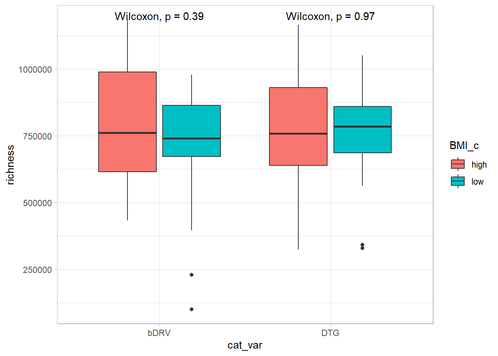

BL_stratification
Carlos Blázquez Bondia
2023-03-06
Last updated: 2023-03-09
Checks: 6 1
Knit directory: advanz4/
This reproducible R Markdown analysis was created with workflowr (version 1.7.0). The Checks tab describes the reproducibility checks that were applied when the results were created. The Past versions tab lists the development history.
The R Markdown file has unstaged changes. To know which version of the R Markdown file created these results, you’ll want to first commit it to the Git repo. If you’re still working on the analysis, you can ignore this warning. When you’re finished, you can run wflow_publish to commit the R Markdown file and build the HTML.
Great job! The global environment was empty. Objects defined in the global environment can affect the analysis in your R Markdown file in unknown ways. For reproduciblity it’s best to always run the code in an empty environment.
The command set.seed(20211203) was run prior to running the code in the R Markdown file. Setting a seed ensures that any results that rely on randomness, e.g. subsampling or permutations, are reproducible.
Great job! Recording the operating system, R version, and package versions is critical for reproducibility.
Nice! There were no cached chunks for this analysis, so you can be confident that you successfully produced the results during this run.
Great job! Using relative paths to the files within your workflowr project makes it easier to run your code on other machines.
Great! You are using Git for version control. Tracking code development and connecting the code version to the results is critical for reproducibility.
The results in this page were generated with repository version ec3949c. See the Past versions tab to see a history of the changes made to the R Markdown and HTML files.
Note that you need to be careful to ensure that all relevant files for the analysis have been committed to Git prior to generating the results (you can use wflow_publish or wflow_git_commit). workflowr only checks the R Markdown file, but you know if there are other scripts or data files that it depends on. Below is the status of the Git repository when the results were generated:
Ignored files:
Ignored: .RData
Ignored: .Rhistory
Ignored: .Rproj.user/
Ignored: analysis/.Rhistory
Ignored: analysis/420_Taxonomy_DA_cache/
Ignored: analysis/505_Adenovirus_Analysis_cache/
Ignored: analysis/510_Function_DA_cache/
Ignored: analysis/output/mre_data/SpeciesQuantification/Metaphlan3/NMDS/
Ignored: data/mre.rds
Untracked files:
Untracked: analysis/figure/
Unstaged changes:
Modified: analysis/311_GR_vs_BMI.Rmd
Note that any generated files, e.g. HTML, png, CSS, etc., are not included in this status report because it is ok for generated content to have uncommitted changes.
These are the previous versions of the repository in which changes were made to the R Markdown (analysis/311_GR_vs_BMI.Rmd) and HTML (docs/311_GR_vs_BMI.html) files. If you’ve configured a remote Git repository (see ?wflow_git_remote), click on the hyperlinks in the table below to view the files as they were in that past version.
| File | Version | Author | Date | Message |
|---|---|---|---|---|
| Rmd | ec3949c | cblazquez | 2023-03-08 | updated BMI_vs_GR |
| html | ec3949c | cblazquez | 2023-03-08 | updated BMI_vs_GR |
| Rmd | e1710d2 | cblazquez-irsi | 2023-03-07 | started analysis n GR vs BMI |
suggested package selbal ✔suggested package DataExplorer ✔suggested package lme4 ✔suggested package merTools ✔Stratification by BMI
One of the first things will be to test for how the BMI distributes at baseline, and to check for differences between groups
peaks_bl <- igc_df %>%
dplyr::filter(long_var == 0, !is.na(BMI)) %>%
dplyr::pull(BMI) %>%
density() %>%
peak_finder(goal = "max")
median_bl <- igc_df %>%
dplyr::filter(long_var == 0, !is.na(BMI)) %>%
pull(BMI) %>%
median()
igc_df %>%
dplyr::filter(long_var == 0, !is.na(BMI)) %>%
ggplot(.) +
# geom_histogram(aes(x = BMI), fill = "grey", bins = 100) +
geom_density(aes(x = BMI),bins = 100, fill = "grey") +
theme_bw() +
geom_vline(xintercept = peaks_bl$x, lty = 3) +
geom_vline(xintercept = median_bl, col = "red") +
geom_text(data = peaks_bl, aes(x = x, y = y*.9, label = round(x, 3))) +
geom_text(aes(x = median_bl, y = max(peaks_bl$y)*.5, label = round(median_bl,3))) +
labs(x = "BMI", y = "kernel density", title = "BMI distribution at baseline") +
theme(axis.title.y = element_blank())Warning: Ignoring unknown parameters: bins
| Version | Author | Date |
|---|---|---|
| ec3949c | cblazquez | 2023-03-08 |
igc_df %>%
dplyr::filter(long_var == 0, !is.na(BMI)) %>%
dplyr::mutate(BMI_c = case_when(BMI >= 22 ~ "high",
BMI < 22 ~ "low")) %>%
group_by(BMI_c) %>%
tally() %>%
kableExtra::kable(format="markdown")| BMI_c | n |
|---|---|
| high | 40 |
| low | 38 |
It seems there is a certain bimodality in the distribution of BMI at BL. However, still seems to be close to normal, so the max peak of 21.57 is fairly close to the median of 22.084. From this it 22 seems a good cut-off point between high and low BMI.
bmi_c <-
igc_df %>%
dplyr::filter(long_var == 0, !is.na(BMI)) %>%
dplyr::select(link_var, long_var, cat_var, BMI, richness) %>%
mutate(cluster = kmeans(BMI, centers = 2)$cluster)
bmi_c %>%
arrange(BMI) %>%
filter(BMI == max(BMI[cluster == 1]))# A tibble: 1 × 6
link_var long_var cat_var BMI richness cluster
<chr> <int> <chr> <dbl> <int> <int>
1 E005 0 DTG 29.6 638678 1A kmeans clustering approach splits both groups at around BMI = 22.5. This should further reiforce the 22 threshold.
STratification by BMI at baseline
Now we found a threshold appropiate to split by BMI, we can stratify the population by treatment and bmi, vs gene richness.
bmi_c %>%
dplyr::mutate(BMI_c = case_when(
BMI >= 22 ~ "high",
BMI < 22 ~ "low"
)) %>%
# dplyr::mutate(group_bmi = paste(cat_var, BMI_c)) %>%
ggplot(aes(x = cat_var, y = richness, fill = BMI_c)) +
geom_boxplot() +
ggpubr::stat_compare_means(method = "wilcox.test", hide.ns = F) +
theme_light()
| Version | Author | Date |
|---|---|---|
| ec3949c | cblazquez | 2023-03-08 |
bmi_c %>%
# dplyr::select(BMI, richness) %>%
dplyr::filter(!is.na(richness)) %>%
mutate(new_c = kmeans(.[,c("BMI","richness")], centers = 2)$cluster) %>%
ggplot(aes( x = BMI, y = richness, color = as.factor(new_c))) +
geom_point() +
theme_light()
| Version | Author | Date |
|---|---|---|
| ec3949c | cblazquez | 2023-03-08 |
Doesn’t seem to be any noticeable difference between groups or BMI types. No diferences richness between HBMI and LBMI could be found.
Stratification by BMI changes
Maybe the increase in gene richness may be associated with higher increase in BMI
delta_bmi_df <-
igc_df %>%
# dplyr::filter(long_var == 0) %>%
dplyr::select(link_var, long_var, cat_var, richness, BMI) %>%
group_by(link_var) %>%
dplyr::filter(long_var %in% c(0,96),
!is.na(BMI)) %>%
filter(n() ==2) %>%
mutate(bmi0 = BMI[long_var == 0],
delta_BMI_abs = BMI - BMI[long_var == 0],
delta_BMI_rel = (BMI - BMI[long_var == 0])*100 / BMI[long_var == 0],
delta_gr_abs = richness - richness[long_var == 0],
delta_gr_rel = (richness - richness[long_var == 0]) / (richness + richness[long_var == 0])) %>%
dplyr::filter(long_var == 96) %>%
dplyr::select(record_id = link_var, contains("delta"), bmi0, cat_var)
peaks_abs <-
unique(metadata$group) %>%
purrr::set_names() %>%
purrr::map_dfr(function(treat) {
delta_bmi_df %>%
dplyr::filter(cat_var == treat) %>%
dplyr::pull(delta_BMI_abs) %>%
density() %>%
peak_finder(goal = "min") %>%
round(., 3) %>%
mutate(cat_var = treat)
})
plot_delta_abs <-
delta_bmi_df %>%
ggplot(aes(x = delta_BMI_abs)) +
geom_density(aes(color = cat_var)) +
geom_vline(xintercept = peaks_abs$x, aes(color = cat_var)) +
geom_text(data = peaks_abs, aes(x = peaks_abs$x, y = peaks_abs$y*.9,label = peaks_abs$x, color = cat_var)) +
theme_light() +
labs(title = "Absolute", x = "BMI increase") +
theme(axis.title.y = element_blank())
peaks_rel <-
unique(metadata$group) %>%
purrr::set_names() %>%
purrr::map_dfr(function(treat) {
delta_bmi_df %>%
dplyr::filter(cat_var == treat) %>%
dplyr::pull(delta_BMI_rel) %>%
density() %>%
peak_finder(goal = "min") %>%
round(., 3) %>%
mutate(cat_var = treat)
})
plot_delta_rel <-
delta_bmi_df %>%
ggplot(aes(x = delta_BMI_rel,color = cat_var)) +
geom_density(aes(color = cat_var)) +
geom_vline(xintercept = peaks_rel$x) +
geom_text(data = peaks_rel, aes(x = peaks_rel$x, y = peaks_rel$y*.9,label = peaks_rel$x, color = cat_var)) +
labs(title = "Relative (%)", x = "BMI increase") +
theme_light()
# delta_bmi_df %>%
ggpubr::ggarrange(plot_delta_abs, plot_delta_rel) Both absolute and relative increases seem fairly unimodal with a slight skew to the left. There seems to be a local minima in the relative deltas, but not enough to justfy a split.
sessionInfo()R version 4.0.5 (2021-03-31)
Platform: x86_64-redhat-linux-gnu (64-bit)
Running under: Fedora 34 (Workstation Edition)
Matrix products: default
BLAS/LAPACK: /usr/lib64/libflexiblas.so.3.1
locale:
[1] LC_CTYPE=en_US.UTF-8 LC_NUMERIC=C
[3] LC_TIME=en_US.UTF-8 LC_COLLATE=en_US.UTF-8
[5] LC_MONETARY=en_US.UTF-8 LC_MESSAGES=en_US.UTF-8
[7] LC_PAPER=en_US.UTF-8 LC_NAME=C
[9] LC_ADDRESS=C LC_TELEPHONE=C
[11] LC_MEASUREMENT=en_US.UTF-8 LC_IDENTIFICATION=C
attached base packages:
[1] stats graphics grDevices utils datasets methods base
other attached packages:
[1] metar_0.1.5 RColorBrewer_1.1-3 forcats_0.5.1 stringr_1.4.0
[5] dplyr_1.0.9 purrr_0.3.4 readr_2.1.2 tidyr_1.2.0
[9] tibble_3.1.7 ggplot2_3.3.6 tidyverse_1.3.1
loaded via a namespace (and not attached):
[1] readxl_1.4.0 backports_1.4.1 blme_1.0-5
[4] workflowr_1.7.0 systemfonts_1.0.4 plyr_1.8.7
[7] igraph_1.3.2 splines_4.0.5 listenv_0.8.0
[10] digest_0.6.29 foreach_1.5.2 htmltools_0.5.2
[13] fansi_1.0.3 magrittr_2.0.3 cluster_2.1.3
[16] tzdb_0.3.0 globals_0.15.0 Biostrings_2.58.0
[19] modelr_0.1.8 svglite_2.1.0 colorspace_2.0-3
[22] rvest_1.0.2 haven_2.5.0 xfun_0.31
[25] crayon_1.5.1 jsonlite_1.8.0 lme4_1.1-29
[28] survival_3.3-1 iterators_1.0.14 ape_5.6-2
[31] glue_1.6.2 kableExtra_1.3.4 gtable_0.3.0
[34] zlibbioc_1.36.0 XVector_0.30.0 webshot_0.5.3
[37] phyloseq_1.34.0 car_3.1-0 Rhdf5lib_1.12.1
[40] BiocGenerics_0.36.1 abind_1.4-5 scales_1.2.0
[43] mvtnorm_1.1-3 DBI_1.1.3 rstatix_0.7.0
[46] Rcpp_1.0.8.3 viridisLite_0.4.0 xtable_1.8-4
[49] merTools_0.5.2 stats4_4.0.5 htmlwidgets_1.5.4
[52] httr_1.4.2 ellipsis_0.3.2 DataExplorer_0.8.2
[55] pkgconfig_2.0.3 farver_2.1.0 sass_0.4.1
[58] dbplyr_2.2.0 utf8_1.2.2 here_1.0.1
[61] tidyselect_1.1.2 labeling_0.4.2 rlang_1.0.2
[64] reshape2_1.4.4 later_1.3.0 munsell_0.5.0
[67] cellranger_1.1.0 tools_4.0.5 cli_3.3.0
[70] generics_0.1.2 selbal_0.1.0 ade4_1.7-19
[73] broom_0.8.0 evaluate_0.15 biomformat_1.18.0
[76] fastmap_1.1.0 arm_1.12-2 yaml_2.3.5
[79] knitr_1.39 fs_1.5.2 future_1.26.1
[82] nlme_3.1-158 whisker_0.4 mime_0.12
[85] xml2_1.3.2 compiler_4.0.5 rstudioapi_0.13
[88] ggsignif_0.6.3.9000 reprex_2.0.1 bslib_0.3.1
[91] stringi_1.7.6 highr_0.9 logger_0.2.2
[94] lattice_0.20-45 Matrix_1.4-1 nloptr_2.0.3
[97] vegan_2.6-2 permute_0.9-7 multtest_2.46.0
[100] vctrs_0.4.1 pillar_1.7.0 lifecycle_1.0.1
[103] networkD3_0.4 rhdf5filters_1.2.1 furrr_0.3.0
[106] jquerylib_0.1.4 cowplot_1.1.1 data.table_1.14.2
[109] httpuv_1.6.5 R6_2.5.1 promises_1.2.0.1
[112] gridExtra_2.3 IRanges_2.24.1 parallelly_1.32.0
[115] codetools_0.2-18 boot_1.3-28 MASS_7.3-57
[118] assertthat_0.2.1 rhdf5_2.34.0 rprojroot_2.0.3
[121] withr_2.5.0 S4Vectors_0.28.1 broom.mixed_0.2.9.4
[124] mgcv_1.8-40 parallel_4.0.5 hms_1.1.1
[127] grid_4.0.5 coda_0.19-4 minqa_1.2.4
[130] rmarkdown_2.14 carData_3.0-5 ggpubr_0.4.0
[133] git2r_0.30.1 Biobase_2.50.0 shiny_1.7.1
[136] lubridate_1.8.0